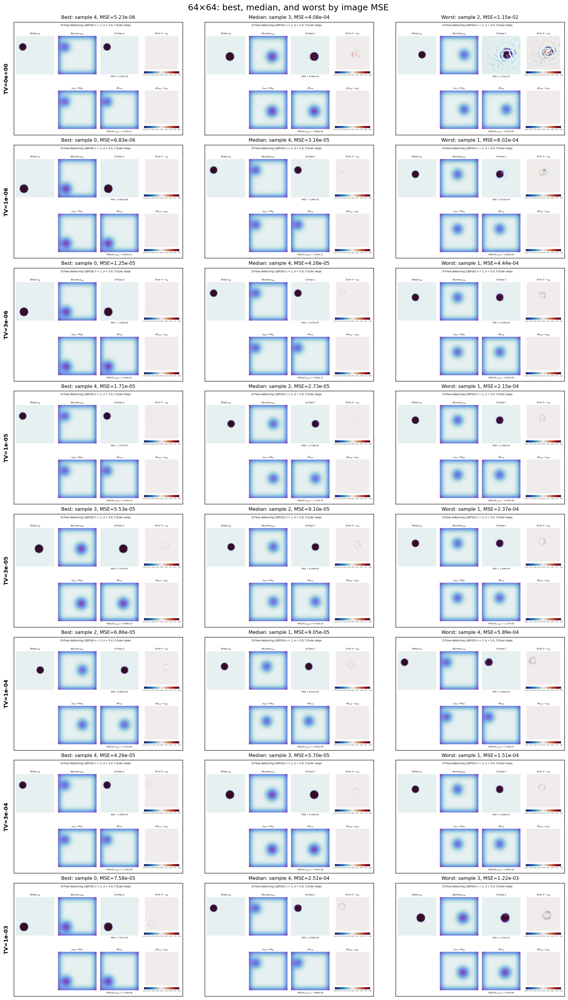
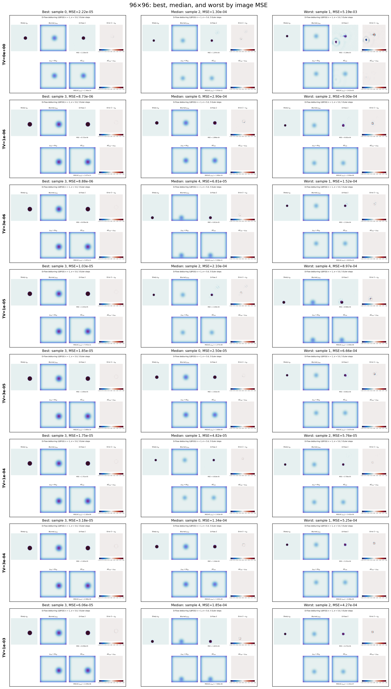
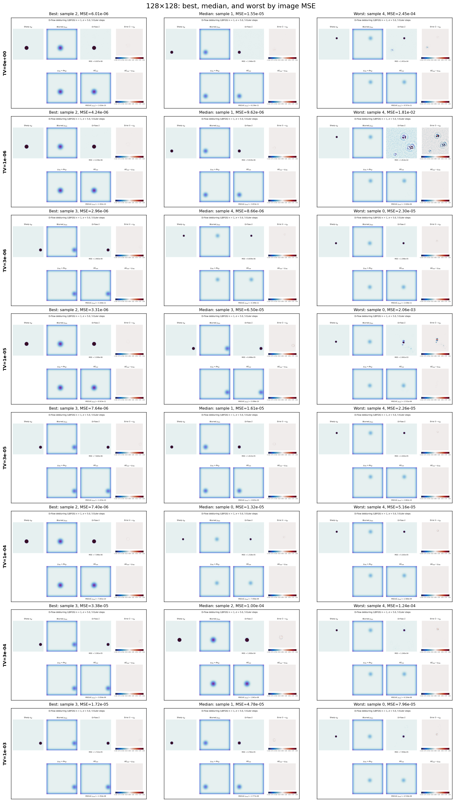
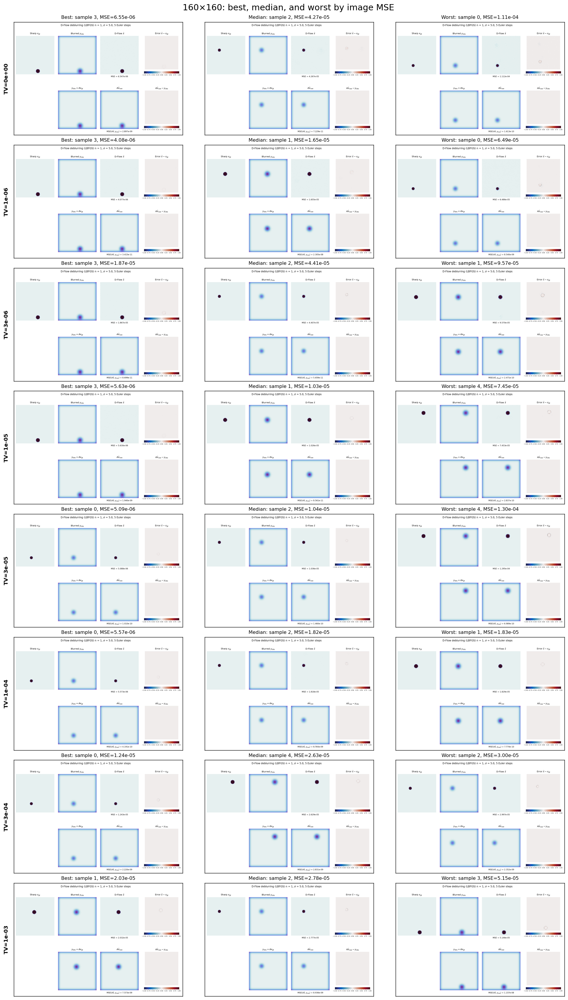

D-Flow TV and Runtime Results
Results from the completed TV sweep and GPU iteration-timing experiment.
1. TV-regularization sweep
Experiment: five paired samples at each of 64×64, 96×96, 128×128, and 160×160; LBFGS LR 1.0; no line search; 750 outer steps; five Euler steps. TV weights: 0, 10−6, 3×10−6, 10−5, 3×10−5, 10−4, 3×10−4, and 10−3.
| TV weight | 64 MSE mean / median | 96 MSE mean / median | 128 MSE mean / median | 160 MSE mean / median | All MSE mean / median | Mean solution TV | Samples with lower image MSE | Samples with lower solution TV |
|---|---|---|---|---|---|---|---|---|
| 0e+00 | 2.808e-03 4.083e-04 |
1.114e-03 1.297e-04 |
6.744e-05 1.546e-05 |
4.413e-05 4.267e-05 |
1.008e-03 4.757e-05 |
0.02104 | — | — |
| 1e-06 | 1.785e-04 3.160e-05 |
3.360e-04 2.896e-04 |
3.650e-03 9.619e-06 |
2.276e-05 1.655e-05 |
1.047e-03 1.974e-05 |
0.02188 | 13 | 17 |
| 3e-06 | 1.285e-04 4.275e-05 |
6.621e-05 6.812e-05 |
1.006e-05 8.659e-06 |
5.323e-05 4.407e-05 |
6.450e-05 2.155e-05 |
0.00703 | 15 | 20 |
| 1e-05 | 6.197e-05 2.728e-05 |
3.014e-04 2.100e-04 |
4.999e-04 6.496e-05 |
2.249e-05 1.026e-05 |
2.214e-04 2.405e-05 |
0.00774 | 11 | 19 |
| 3e-05 | 1.111e-04 9.104e-05 |
2.274e-04 2.502e-05 |
1.492e-05 1.613e-05 |
3.653e-05 1.036e-05 |
9.749e-05 2.417e-05 |
0.00707 | 11 | 20 |
| 1e-04 | 1.898e-04 9.051e-05 |
4.357e-05 4.816e-05 |
1.960e-05 1.318e-05 |
1.477e-05 1.818e-05 |
6.694e-05 3.184e-05 |
0.00616 | 13 | 19 |
| 3e-04 | 9.076e-05 5.705e-05 |
2.373e-04 1.344e-04 |
8.299e-05 1.000e-04 |
2.241e-05 2.629e-05 |
1.084e-04 5.677e-05 |
0.00589 | 11 | 20 |
| 1e-03 | 4.169e-04 2.505e-04 |
2.276e-04 1.847e-04 |
4.654e-05 4.782e-05 |
3.214e-05 2.777e-05 |
1.808e-04 6.817e-05 |
0.00587 | 8 | 20 |
Best, median, and worst reconstructions
The selections below are based on image MSE among the five samples for each resolution and TV weight.




2. Per-iteration runtime
Experiment: four resolutions, five samples per resolution, 750 outer LBFGS steps per sample, LR 1.0, TV weight 10−4, no line search, and five Euler steps. Timing used one GPU process, with the first 10 iterations of each sample excluded as warm-up.
| Resolution | Mean (s) | Median (s) | Lowest (s) | Highest (s) |
|---|---|---|---|---|
| 64×64 | 1.270 | 1.230 | 0.124 | 2.332 |
| 96×96 | 1.229 | 1.218 | 0.119 | 1.841 |
| 128×128 | 2.839 | 3.881 | 0.182 | 5.884 |
| 160×160 | 5.559 | 5.897 | 0.225 | 7.083 |
The 128×128 timings changed partway through the run because of GPU contention; the values above are the measured results, not isolated-hardware estimates.
Source data: outputs/dflow_tv_lr_comparison_750_steps/by_tv_weight/ and outputs/dflow_time_complexity_tv_1e-4_lr_1p0_750_steps/.